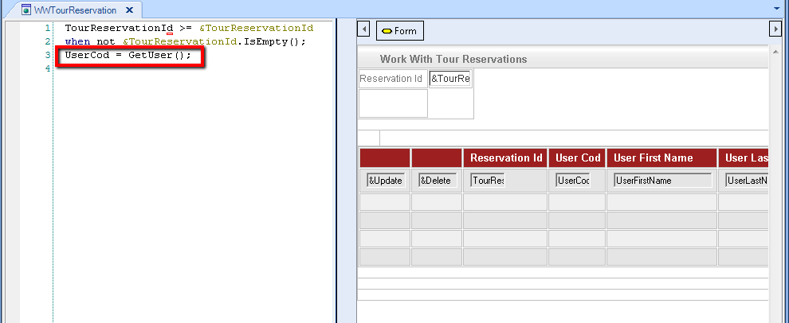

Warning: The solution explained in this document can only be used when GAM Authentication Type is GAM Local. This is a possible solution to the problem presented at HowTo: Mapping Application Users to GAM Users. Given that the User is identified in the application's tables using any attribute -such as "UserIdentification" attribute- here we show how to store this information in the ExternalID field of the GAM User table, to match the application users to the GAM users. In this case, we don't need to make any reorganization to our application tables (unlike the solution explained in HowTo: Mapping Application Users to GAM - Adding a secondary attribute referencing the GAMUser). It consists in saving the "UserIdentification" information in the ExternalID field each time the user is registered and retrieving the data when the user logs in, to have the "UserIdentification" in the application User table. How to update the ExternalID of a GAM UserSuppose you already have the application User table and you want to duplicate the users in a GAM database, mapping them using the ExternalID of GAM. 1. You need to run a procedure that scans the application User table and updates the information in a GAM database table (inserts the users in a GAM Repository). For each user in the application Users table, there will be a GAM User, whose ExternalID will be the UserIdentification in the application User table. So, the idea is to store, in the ExternalID property of the GAMUser, the PK of the application User table in the application - Usercod in this sample.
For Each UserCod
&User.GUID = &UserId //&User is GAMUser data type, &UserId is GAMGUID data type
&User.Name = UserName
&User.FirstName = UserFirstName
&User.LastName = UserLastName
&User.Password = UserPassword
&User.EMail = UserEmail
&User.ExternalId = UserCod.ToString().Trim()
&User.Save()
if &User.Success()
msg('User added to GAM Repository: ' + &User.Name)
else
&GAMErrors = &User.GetErrors() //&GAMErrors is collection of GAMError data type
do 'ProcessErrors'
endif
Endfor
Commit
Sub 'ProcessErrors'
For &GAMError in &GAMErrors
Msg(Format("%1 (GAM%2)", &GAMError.Message, &GAMError.Code))
EndFor
EndSub
2. To keep the users duplicated in the application's database and in the GAM database, you need to update both, when the user registers or updates his data. This is very similar to what is explained in HowTo: Mapping Application Users to GAM - Adding a secondary attribute referencing the GAMUser. If the GAM backend is used to manage the user's information, the web panels should be changed to update the user's information in the application database, and in the GAM database, referencing the ExternalID property with the corresponding value as explained before. How to retrieve user information: GetExternalId method of GAMUser objectThe GetExternalId method of GAMUser object allows getting the value stored in the ExternalID field of the GAM User table. Consider a scenario where users only see the information that corresponds to them; for instance, only the "TourReservations" related to them. You can use a procedure that obtains the "UserCode" from the GAMUser who is logged in: &UserIdentification = GAMUser.GetExternalId() &UserCod = &UserIdentification.ToNumeric() parm(out:&UserCod); Then in the WWTourReservation, you can filter data using that procedure:  See alsoHowTo: Filtering Data by User Using the GAM API |
| Backlinks | |
| GAM API: How to reference GAM users | HowTo: Mapping Application Users to GAM Users |